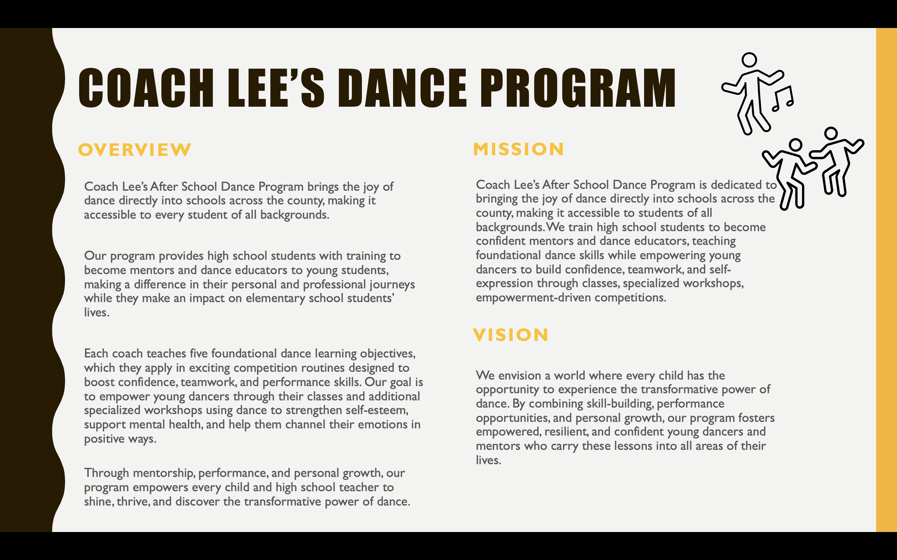
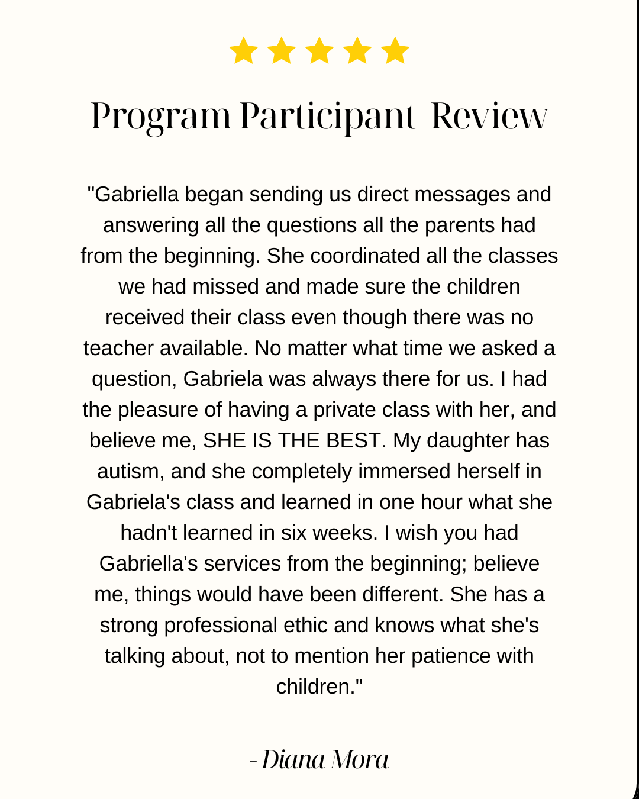

Introducing My Consulting for Social Impact Portfolio
Through my consulting work with local nonprofits and social enterprises, I help transform creative ideas into programs that make a real difference. Below are a few examples of projects where I've turned vision into impact.
~ My Services ~

Strategic Planning
Coach Lee's Afterschool Wellness Camp
-
As Program Supervisor, I led the strategic transformation of a multi-school dance program, uniting staff, students, and families under a mission of empowerment through dance.
- Conducted a program needs assessment and identified major communication and organizational challenges.
- Developed a mission and vision statement.
- Built a program evaluation model.
- Implemented the redesigned curriculum, bringing strategic plans to life for students and staff.

Cortes Family Physicians
-
Partnered with one of Manatee County's few independent primary care practices to lead a strategic marketing and rebranding initiative, bridging the clinic's trusted legacy of family-centered care with its forward-looking vision in regenerative medicine.
- Developed and implemented a marketing and rebranding plan to expand community reach.
- Initiated community partnerships and event collaborations to strengthen visibility and engagement.
- Revamped social media, creating content and videos to showcase patient stories.
- Redesigned the website, writing all content and shaping the brand's visual identity.
Sembrando Arte, Cosechando Esperanzas
-
Developed a comprehensive social venture business plan to guide the launch and growth of my nonprofit initiative.
- Strategic Plan (PDF)
Program Development
Coach Lee's Afterschool Wellness Camp
-
Stepped into the role of program director and implemented a strategic plan into a new curriculum training high school students to lead dance classes for younger participants.
- Managed weekly communication and logistics for classes and competitions, coordinating between 5 schools and more than 30 families to ensure smooth operations and performance readiness.
- Directed the artistic and logistical flow of the competition, including choreography for the opener and finale, cue calling, program, award coordination, empowerment workshop and post-performance interviews.
- Conducted post-program evaluations and feedback analysis.


Healthy Teens: Holistic Sexual Health Curriculum
-
Following two years as a Teen Health Educator volunteer, during which I raised $3,000 for teen health initiatives in marginalized communities, I took on a leadership role to elevate and expand the program's curriculum.
- Co-created a comprehensive curriculum blending physical, emotional, and mental health education.
- Introduced a new module, “Considering Yourself,” promoting consent, self-worth, and emotional resilience.
- Expanded existing lessons on contraception and STDs to include mental health and peer pressure awareness.
- Served as Site Coordinator, leading and managing the team to present and facilitate lessons that inspired open dialogue and youth empowerment.
- Sexual Health HTC
Sembrando Arte, Cosechando Esperanzas
-
Developed a culturally grounded curriculum using indigenous art and healing practices to support youth and community resilience after 11 adolescent suicides in 2023.
Go to Program

Fundraising
Sembrando Arte, Cosechando Esperanzas
-
Raised $1,500 to fund the first cohort of program development through a full-scale fundraising campaign.
- Organized a traditional Colombian Christmas show in partnership with local artists.
- Collaborated with 10 restaurants to provide food for sales and three businesses plus a local soccer team for auctions.
- Launched a GoFundMe campaign with an organizational video along with an acai bowl fundraiser. Go to Fundraising Section
Manatee Community Foundation Grants Committee
-
Served on a select grant review committee in Manatee County, helping direct significant funding to local nonprofits and gaining practical knowledge of what strengthens a winning grant application.